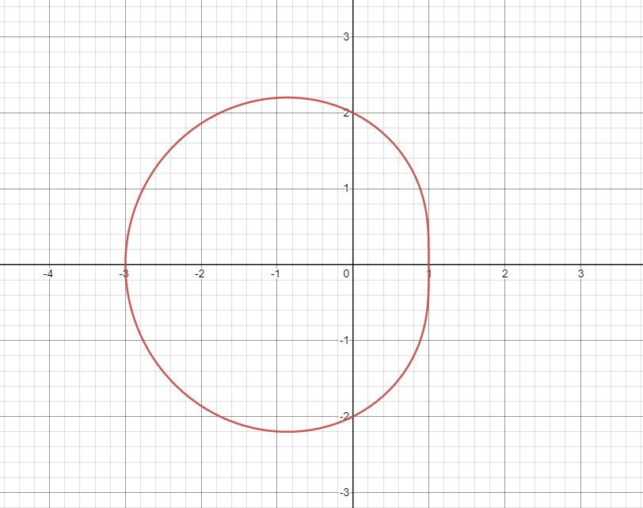

Problem 1: Area Under a Polar Curve
Find the area under the polar curve 2 - cos(θ); 0 ≤ θ ≤ 2π

\[= \frac{1}{2}\int_{0}^{2\pi}(2-\cos \theta )^2 d\theta\\
\\
= \frac{1}{2}\int (2-\cos \theta )^2 d\theta\\
\\
= \frac{1}{2}\int [4-4\cos\theta + \cos^{2}\theta]d\theta\\
\\
= \frac{1}{2}(4)\int d\theta - \frac{1}{2}(4)\int \cos\theta d\theta + \int \cos^{2}\theta d\theta\\
\\
= 2\theta - 2\sin\theta + \frac{1}{2} \int (1 + \cos2\theta)d\theta\\
\\
= 2\theta - 2\sin\theta + \frac{1}{2} \int d\theta + \frac{1}{2} \int \cos2\theta d\theta\\
\\
= 2\theta - 2\sin\theta + \frac{\theta}{2} + \frac{1}{4} \sin 2\theta\\
\\
= \frac{5}{2}\theta - 2\sin\theta + \frac{1}{4} \sin 2\theta |_{0}^{2\pi}\\
\\
= 5\pi - 0 = 5\pi\]
Problem 2: Arc Length
\[f(x) = 2x^\frac{3}{2}\] Calculate the arc length of the graph of f(x) over the interval [0,1] . Round the answer to three decimal places.
\[f'(x) = 3x^\frac{1}{2} \\
\\
(f'(x))^2 = 9x \\
\\
Arc\:Length = \int_0^{1}\sqrt{1+9x}\:dx\\
\\
Perform\:u-substitution: u = 1+9x\:;\:du = 9dx\]
Change the limits of integration. When x = 0, u = 1. When x = 1, u = 10
\[=\frac{1}{9}\int_{1}^{10}\sqrt{u}\:du\\
\\
=\frac{1}{9}\cdot \frac{2}{3}u^\frac{3}{2}\:|_{1}^{10}\\
\\
=\frac{2}{27}[10\sqrt{10}-1] \approx 2.268\:\text{units}\]
Problem 3: Polar Curve Length
Find the arc length of the cardioid
\[r = 2 + 2\cos\theta\]
As theta goes from 0 to 2pi, the cardioid is traced out exactly once
\[\alpha = 0\:and\:\beta=2\pi\]
\[L = \int_{0}^{2\pi} \sqrt{[2+2\cos\theta]^2 + [-2\sin\theta]^2}\:d\theta\\
\\
= \int_{0}^{2\pi} \sqrt{4 + 8\cos\theta + 4\cos^2\theta + 4\sin^2\theta}\:d\theta\\
\\
= \int_{0}^{2\pi} \sqrt{4 + 8\cos\theta + 4(cos^2\theta + sin^2\theta)}\:d\theta\\
\\
remember: cos^2\theta + sin^2\theta = 1\\
\\
= \int_{0}^{2\pi} \sqrt{8 + 8\cos\theta}\: d\theta\\
\\
= 2 \int_{0}^{2\pi} \sqrt{2 + 2\cos\theta}\: d\theta\\\]
Using trig identities to manipulate the equation
\[2 cos(2\alpha) = 2\cos^2\alpha-1\\
\\
=cos(2\alpha) + 1 = 2cos^2\alpha\\
\\
=2cos(2\alpha) + 2 = 4cos^2\alpha\\
\\
let\:\alpha = \frac{\theta}{2}\\
\\
2 + 2\cos(\theta) = 4cos^2(\frac{\theta}{2})\\
\\
L = 2 \int_{0}^{2\pi} \sqrt{4cos^2(\frac{\theta}{2})}\\
\\
= 4 \int_{0}^{2\pi} |\cos\frac{\theta}{2}|\: d\theta\\
\\\]
Change the limits from 0 to pi and double the answer because the cosine is negative for some value in its domain
\[= 8 \int_{0}^{\pi} cos(\frac{\theta}{2})\\
\\
= 8(2\sin(\frac{\theta}{2}))|_{0}^{\pi} = 16\]